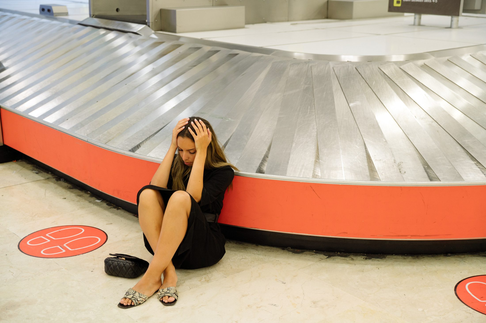

Antes, durante e depois da viagem
Guia do Viajante
Informação para viajar melhor.
Laura LamounierAgência de viagens
Boas-vindas
Informação também faz parte da sua bagagem
Viajar exige planejamento, mas imprevistos podem acontecer. Este Guia do Viajante reúne informações e orientações práticas para ajudar você a se preparar antes, durante e depois da viagem, abordando temas como documentação, aeroporto, bagagem, conexões, viagens internacionais e direitos dos passageiros.
Além de apresentar seus principais direitos, o guia explica como agir diante de situações inesperadas, quais documentos guardar e quais providências adotar para proteger seus interesses.
Nosso objetivo é tornar sua viagem mais segura e tranquila, por meio da informação e da prevenção. Consulte o guia antes e durante a sua viagem.
Boa viagem!
Karolem Silva e Laura Lamounier
Sumário
O que você vai encontrar
- 01.Antes de viajar: planejamento05
- 02.Aeroporto e embarque06
- 03.Bagagem07
- 04.Quando algo dá errado08
- 05.Direitos do viajante10
- 06.Como produzir provas durante uma viagem11
- 07.Checklist do viajante12
- 08.Canais e contatos úteis14
Como usar
Blocos curtos para consultar rápido
Cada capítulo traz os temas em poucas linhas. Os quadros abaixo aparecem ao longo do guia e destacam o que não pode ficar para depois.
Capítulo 01
Antes de viajar: planejamento
Planejamento é o primeiro passo de uma viagem tranquila.
- 1.1
Documentos necessários
Documento oficial com foto, dentro da validade e em bom estado.
- 1.2
Passaporte, vistos e autorizações
Confira a validade do passaporte e as exigências do destino e das escalas com antecedência.
- 1.3
Seguro viagem
Em alguns destinos ele é obrigatório. Leia o que a apólice cobre e salve os contatos de atendimento.
- 1.4
Cuidados com documentos e informações pessoais
Guarde cópias digitais em local seguro e não publique fotos de documentos ou do cartão de embarque.
- 1.5
Organização da viagem
Reúna reservas, horários e endereços em um só lugar, no celular e em papel.
- 1.6
Checklist pré-viagem
Use a lista do capítulo 7 para não esquecer nada.

Capítulo 02
Aeroporto e embarque
Chegue com antecedência e evite contratempos.
- 2.1
Quando chegar ao aeroporto
Siga o horário indicado pela companhia aérea. Em voos internacionais, a antecedência costuma ser maior.
- 2.2
Check-in
Faça on-line quando possível e confira nome, voo e horário no cartão de embarque.
- 2.3
Controle de segurança
Deixe eletrônicos e líquidos fáceis de retirar para agilizar a inspeção.
- 2.4
Objetos proibidos ou restritos
Itens cortantes, inflamáveis e baterias têm regras próprias. Consulte a companhia antes de arrumar a mala.
- 2.5
Transporte de líquidos
Em voos internacionais, frascos de até 100 ml, em uma embalagem plástica transparente de até 1 litro.

Capítulo 03
Bagagem
O que você precisa saber antes de despachar sua mala.
- 3.1
Bagagem de mão
Confira o peso e as medidas da sua tarifa. Leve nela remédios, documentos e objetos de valor.
- 3.2
Bagagem despachada
Identifique a mala por dentro e por fora e guarde o comprovante de despacho.
- 3.3
Excesso de bagagem
Pesar a mala em casa evita cobranças inesperadas no balcão.
- 3.4
Bagagens especiais
Instrumentos, equipamentos esportivos e cadeiras de rodas pedem aviso prévio à companhia.
- 3.5
Objetos de valor
Não despache joias, eletrônicos e dinheiro. Mantenha esses itens com você.

Capítulo 04
Quando algo dá errado
Saber o que fazer evita dor de cabeça.
- 4.1
Perdi meu voo. E agora?
Procure a companhia o quanto antes e pergunte sobre remarcação e as regras da sua tarifa.
- 4.2
Meu voo foi atrasado ou cancelado. O que faço?
Peça a informação por escrito e pergunte sobre assistência, reacomodação ou reembolso.
- 4.3
Minha bagagem não chegou.
Registre a ocorrência antes de sair do desembarque. O passo a passo está na próxima página.
- 4.4
Minha bagagem foi danificada.
Fotografe o dano ainda no aeroporto e registre a reclamação na companhia.
- 4.5
Perdi uma conexão.
Procure o balcão da companhia na escala e peça a reacomodação.
- 4.6
Fui impedido de embarcar (overbooking).
Não saia do balcão sem uma solução registrada: novo voo, assistência ou reembolso.
- 4.7
Tive um problema durante a viagem.
Anote data, hora e nomes, e guarde tudo o que comprove o que aconteceu.
- 4.8
Perdi meus documentos.
Registre a ocorrência na polícia. No exterior, procure o consulado brasileiro.
- 4.9
Fui vítima de furto ou golpe.
Bloqueie cartões e contas, registre a ocorrência e avise a agência.
- 4.10
Tive uma emergência durante a viagem.
Acione primeiro o seguro viagem: ele indica onde você será atendido.
4.3 Minha bagagem não chegou
Bagagem extraviada: o que fazer?
- Procure imediatamente o atendimento da companhia aérea.
- Registre a ocorrência.
- Guarde o comprovante.
- Informe seus dados de contato.
- Guarde os comprovantes das despesas realizadas.
Capítulo 05
Direitos do viajante
Você tem direitos e pode exercê-los.
- 5.1
Quando procurar orientação jurídica
Quando a companhia não resolve o problema, o prejuízo é relevante ou você não sabe se um direito foi desrespeitado.
- 5.2
Como preservar seus direitos
Registre tudo por escrito, guarde os comprovantes e não aceite soluções apenas verbais.
Orientação jurídica
Uma dúvida sobre a sua viagem não precisa virar prejuízo.
KS Advocacia Empresarial
Dra. Karolem Silva, OAB/PR 132.409
(42) 99960-1379

Capítulo 06
Como produzir provas durante uma viagem
Registros simples fazem diferença se algo der errado.
- 6.1
Fotografias e vídeos
Registre a mala antes do despacho e qualquer dano assim que perceber.
- 6.2
E-mails e mensagens
Prefira canais escritos e não apague conversas com a companhia ou a agência.
- 6.3
Protocolos de atendimento
Anote o número, a data e o nome de quem atendeu.
- 6.4
Comprovantes de despesas
Alimentação, transporte e hospedagem extras podem ser cobrados depois.
- 6.5
Bilhetes e cartões de embarque
Guarde até o fim de qualquer reclamação, inclusive os digitais.
- 6.6
Notas fiscais e recibos
Peça a nota no nome do passageiro sempre que possível.
- 6.7
Testemunhas
Anote o nome e o contato de quem presenciou o problema.
- 6.8
Por que guardar todos os documentos
Sem prova, fica mais difícil pedir reembolso ou indenização.
Capítulo 07
Checklist do viajante
Imprima ou salve no celular.
7.1Antes da viagem
- Documentos válidos e conferidos
- Vistos e autorizações, se exigidos
- Seguro viagem contratado
- Reservas salvas no celular e impressas
- Cópias digitais dos documentos
7.2No dia da viagem
- Documento com foto na bolsa
- Cartão de embarque
- Remédios na bagagem de mão
- Carregador e bateria externa
- Mala pesada e identificada
7.3No aeroporto
- Chegar com a antecedência indicada
- Fotografar a mala antes do despacho
- Guardar o comprovante de despacho
- Conferir portão e horário no painel
Checklist do viajante
7.4Durante a viagem
- Guardar notas e recibos
- Documentos em local seguro
- Contatos de emergência à mão
7.5Antes do retorno
- Confirmar o horário do voo
- Conferir as regras de bagagem da volta
- Guardar compras e notas fiscais juntas
7.6Depois da viagem
- Conferir a mala ao desembarcar
- Registrar qualquer problema na hora
- Guardar os comprovantes até tudo se resolver
Marque cada item à medida que resolver. Leve esta página impressa ou salve uma foto no celular.
Capítulo 08
Canais e contatos úteis
Para ter à mão quando precisar.
- 8.1Companhia aérea
- 8.2Aeroporto
- 8.3ANAC
- Telefone 163
anac.gov.br - 8.4Consumidor.gov.br
- consumidor.gov.br
- 8.5Autoridades policiais
- No Brasil, 190
- 8.6Consulado ou embaixada
- 8.7Seguro viagem
- 8.8Agência de viagens
- Laura Lamounier
telefone e e-mail da agência
8.9 Orientação jurídica
KS Advocacia Empresarial, Dra. Karolem Silva
(42) 99960-1379
karolemssadv@gmail.com
Anotações
Anotações da viagem
- Voo e localizador
- Hotel
- Apólice do seguro
- Protocolos
Boa viagem
Mais segurança para cada etapa da sua viagem
Um guia criado por Karolem Silva e Laura Lamounier.
Laura LamounierAgência de viagens